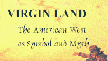

 Many things discussed in this site link well to Henry Nash Smith's seminal work on the West, Virgin Land. ENAM 802 classes at the University of Virginia have been developing hypertext extensions of Virgin Land which both explore specific chapters in Virgin Land and substantiate what is not present in his work. This project belongs to the latter group of extensions; Smith neglects to discuss the role American Indians played in Westward expansion or how expansion affected the indigenous people of North America.
In his discussion of Frederick Jackson Turner's 1893 essay, "The Significance of the Frontier in American History," Smith asserts:
Turner's most important debt to his intellectual tradition is the ideas of savagery and civilization that he uses to define his central factor, the frontier. His frontier is explicitly the 'meeting point between savagery and civilization.' For him as for his predecessors the outer limit of agricultural settlement is the boundary of civilization, and in his thought as in that of so many earlier interpreters we must therefore begin by distinguishing two Wests, one beyond and within this all-important line. (251)
Both Cooper and Twain dramatize that frontier in their narratives, although with sharply differing perspectives. For Cooper, the frontier is a place where Nature, which encompasses the Native American, is being slowly decimated by the progress of white civilization. Characters such as Uncas and Chingachook from Last of the Mohicans are doomed to extinction by this progress; it is at this frontier that Cooper sets his narratives and it is therefore also in this frontier that we as readers are made aware of Chingachook's and Uncas's tragic fate.
For Twain, the frontier is a glorious place of refuge from the suffocation of society and in many of his scenarios, American Indians are blights which must be removed for white people to thrive. We see Huck "lighting out to the territories" at the conclusion of The Adventures of Huckleberry Finn, away from the women's strict moral rules that Huck comes to despise.
The frontier is also featured in the unfinished narrative Huck and Tom Among the Injuns, and it is perhaps Twain's insistence on it being a major motif in the story that makes the story unfinishable. Similarly, the frontier is featured in Roughing It, in which Twain expresses his disillusionment when he encounters estranged indigenous groups such as the "Goshoot Indians"; and Niagara, a sketch with the Niagara falls as a scenic backdrop, with Twain illustrating once again his disillusionment as he comes into contact with "real" Indians who violate his expectations substantiated by their "literary" dopplegangers.
Return to Introduction